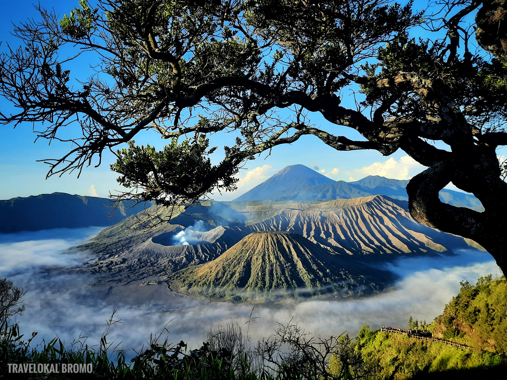
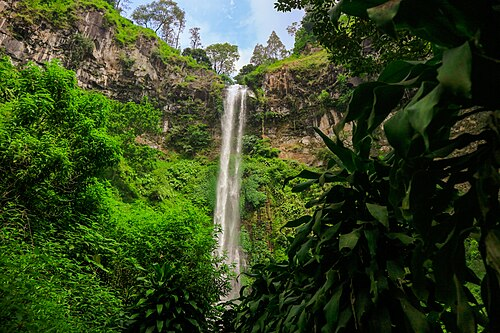

JELAJAH WISATA INDOENSIA
Temukan Keindahan Alam dan Budaya Indonesia
|
🏡Beranda
Selamat datang di website Jelajah Wisata Indonesia. Website ini berisi informasi mengenai beberapa tempat,wisata menarik yang ada di Indonesia.
Indonesia memiliki banyak sekali destinasi wisata,mulai dari pegunungan,pantai,laut,hingga wisata budaya.
🌏Destinasi Wisata
Berikut adalah objek wisata menarik di jawa timur
|

Gunung Bromo
Gunung Bromo merupakan tempat salah satu tempat wisata terkenal yang berada di jawa timur.
|

Kawah Ijen
Kawah Ijen merupakan salah satu tempat wisata terkenal yang berada di jawa timur.
|

Air Terjun Coban Rondo
Air Terjun Coban Rondo merupakan salah satu tempat wisata terkenal yang berada di jawa timur.
|
🎼Musik Nusantara
Silakan dengarkan musik berikut sambil menikmati informasi Wisata Indonesia.
🌸Wonderland Indonesia
Silakan lihat video berikut sambil menikmati informasi wisata indonesia.
Contact person by AhmadYazidAlfatah X RPL-3